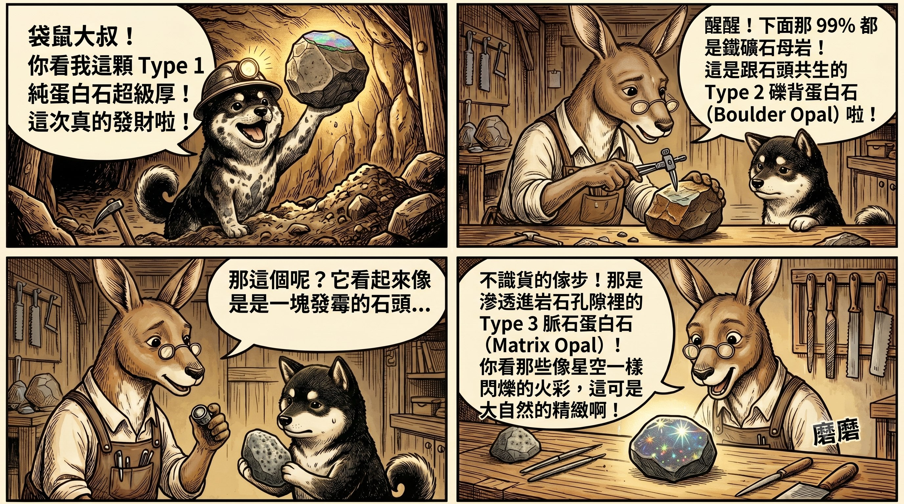

黑柴小學堂 · GAA 分級系統 Lesson 2
寶石的身世之謎——
「純血統」還是「混血兒」？
【公會廣播】 獵人們，恭喜你們通過了第一課的「鷹眼測試」，成功辨識出珍貴的游彩效應！
但你知道嗎？每一顆蛋白石在出土前，都睡在名為「母岩（Host Rock）」的搖籃裡。
蛋白石與母岩之間的「依附關係」，決定了它們在 GAA（澳洲寶石學協會）標準中的三大身世分類。
今天，我們就來解開它們的出生之謎！
核心觀念：什麼是「母岩」？
簡單來說，母岩就是孕育蛋白石的那些泥土、砂岩或鐵礦石。蛋白石的微小球體在這些岩石的縫隙中沉澱、凝結。
當礦工將它們開採出來時，蛋白石與石頭的交融狀態，將它們分成了三種截然不同的個性。

🐕 黑柴小學堂漫畫時間 · Type 1/2/3 鑑定現場
類別一（Type 1）：純血精靈
純蛋白石 · Solid Opal
獵人圖鑑
整顆寶石從裡到外，100% 都是由純粹的蛋白石組成，完全沒有附著任何母岩。
鑑賞筆記
這是市場上最經典的型態。無論是深邃的黑蛋白石，還是清澈的水晶蛋白石，
只要整顆都是純淨的寶石本體，就屬於 Type 1。它們就像是脫離了搖籃，完美獨立的精靈！
類別二（Type 2）：裝甲騎士
礫背蛋白石 · Boulder Opal
獵人圖鑑
蛋白石作為薄薄的一層火彩，緊密附著在堅硬的天然母岩（通常是褐色的鐵礦石）上。
鑑賞筆記（工程師的浪漫）
這是在行家與工程師眼中最迷人的「複合材料」！大自然將堅硬的鐵礦石作為底座裝甲，
內裡卻蘊含著極致閃耀的火彩靈魂。切割師會刻意保留這層岩石外殼，
讓鐵褐色的粗獷與游彩的霓虹產生強烈對比。每一顆 Type 2 都充滿野性與不可複製的獨特輪廓！
類別三（Type 3）：星空點陣
脈石蛋白石 · Matrix Opal
獵人圖鑑
蛋白石並不是聚集成一整塊，而是像水滲入海綿一樣，細密地交織、散佈在母岩的孔隙之中。
鑑賞筆記
它看起來就像是一塊閃爍著繁星的奇幻石頭。當你轉動它時，火彩不是一整片爆發，
而是從岩石的無數個微小毛隙中透出點點星光，充滿低調奢華的神秘感。
市場俗稱例如著名的安達目卡（Andamooka Matrix）。
💡 公會小秘辛：不是所有礫背蛋白石都是 Type 2 喔！舉例來說，
Koroit Boulder Opal 很多都是屬於 Type 3 的蛋白石型式，外觀像礫背但內部結構其實是脈石型態。